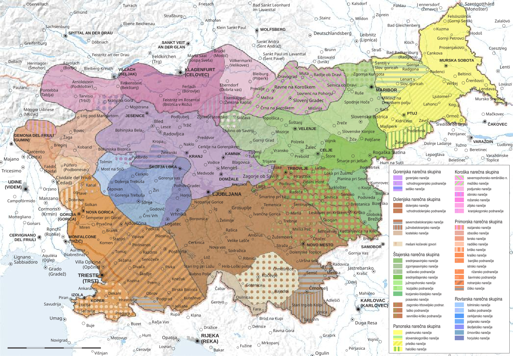

Pri soglasniških glasovnih premenah prihaja do sprememb glasov na koncu korena.

Slovenščina ima 8 samoglasniških glasnikov – [a], [e], [ɛ], [ə], [i], [o], [ɔ] in [u]. Za razliko od ostalih južnoslovanskih jezikov slovenščina razlikuje med širokimi in ozkimi sredinskimi samoglasniki, tako kot zahodnoslovanski jeziki. Sprednji in srednji samoglasniki so vsi nezaokroženi, izjema je le [ü], ki se v knjižnem jeziku ne pojavlja, se pa pojavlja v nekaterih lastnih imenih, najbolj znan je priimek Türk. Zadnji samoglasniki so vsi zaokroženi. Slovenske samoglasnike določata le prva dva formanta, tretji in četrti pri določanju samoglasnikov v slovenščini nimata velike vloge.
Slovenske samoglasnike je težko zapisati z mednarodno glasoslovno abecedo, saj ne sledijo obliki trapeza, kot je osnovana, temveč trikotniku. Vsi samoglasniki so pomaknjeni proti sredini trapeza, še posebej [ɛ], [ɔ] in [a]. [a] je običajno obravnavan kot srednji samoglasnik, torej bi moral biti v IPA zapisan kot /ä/, vendar ima vseeno višjo frekvenco drugega formanta kot običajni srednji /ä/ in je nekje vmes med /ä/ ter /a/. Velik odklon kažeta tudi [ɔ] (okoli 300 Hz) ter [ɛ] (okoli 100 Hz) v primerjavi z navadnimi frekvencami za drugi formant. Posebnost slovenskega jezika je tudi dvoglasniški u [u̯], za katerega mednarodna glasoslovna abeceda uradno še nima svojega znaka, vendar je običajno zapisan kot /u̫/ ali /uʷ/. [e], kateremu sledi /r/, je običajno dvignjen, bližje [i], torej se izgovarja kot /e̝/. Z izjemo [i], [u] in [ə] se ostali naglašeni samoglasniki ločijo glede na koren jezika. [ɛ], [ɔ] in dolgi [a] so izgovorjeni z umaknjenim korenom jezika (/ɛ̙/, /ɔ̙/ in /ä̙/), medtem ko so [e], [o] in kratki [a] izgovorjeni s pomaknjenim korenom jezika (/e̘/, /o̘/ in /ä̘/). [i] in [u] se oba izgovarjata s pomaknjenim korenom (i̘, u̘)
Vsi samoglasniki razen [ə] imajo svojo črko, s katero jih zapisujemo. V zapisu ne ločujemo med širokimi in ozkimi samoglasniki, zato sta oba zapisana z isto črko e oz. o. Polglasnik se zapisuje z različnimi črkami ali pa se ga ne zapiše. Najpogosteje je zapisan kot e (npr. pes, megla), pred zvočniki pa ni zapisan, zvočniki pa postanejo zlogotvorni. To se zgodi le, če pred zvočnikom ni samoglasnika ter mu ta tudi ne sledi oz. se beseda konča na zvočnik, pred katerim ni samoglasnika. Najpogostejši primer je pred [r] (npr. vrba, hrbet), v naglašeni obliki pa se nezapisan pojavlja le še pred [l] in še to le v redkih besedah, ki niti niso slovenske (npr. v Vĺtava). Pred ostalimi zvočniki se ne zapiše le, če je nenaglašen (npr. film, tovarn). [v] in [l] se ponekod lahko izgovarja kot [u] (ali kot [w]). To se zgodi le v ustreznem zvočniškem okolju, npr. ko sta [v] in [l] na koncu besede, pred njima pa je [r] (npr. trl, barv) ali ko sledita nenaglašenim [ɛ], [i] ali [ə] (npr. nesel, bukev, videl). Dvoglasniški u je v večini primerov različica (alofon) glasnikov [v] in [l]; tako se izgovarjata le kadar sta za samoglasnikom ter jima ne sledi samoglasnik temveč soglasnik ali konec besede (npr. sivka, topel, avtor). [u̯] je zapisan z u le v redkih domačih besedah, v besednih zvezah ali polcitatnih besedah.
Oblika, ki je dandanes standarden za zapis izgovorjave slovenskih besed, temelji na raziskavah Jožeta Toporišiča, izvedenih v sedemdesetih letih 20. stoletja. Pred njim sta Ilse Lehiste leta 1961 ter Rado Lenček leta 1966 sicer že objavila poročila o formantih slovenskih samoglasnikov, vendar prvo ni podalo dovolj relevantnih podatkov, saj so bili določeni le na podlagi ene govorke; drugi je podal bolj relevantne podatke, vendar samoglasnikov ni dokončno razdelil, ampak le opisal. Vsekakor pa je bil slednji pomemben za razvoj slovenske fonetike in je tudi v veliki meri vplival na Toporišiča, saj je Toporišič prav tako sestavil model z osmimi samoglasniki, ki se med seboj razlikujejo po kvaliteti ter ločil samoglasnike na dolge in kratke.
Toporišič je naglašen polglasnik uvrščal med dolge samoglasnike, vendar so nadaljnje raziskave pokazale, da je naglašeni polglasnik približno enako dolg kot nenaglašeni ter je bil potem premaknjen pod kratke samoglasnike. To je bila edina večja razlika med toporišičevim modelom in tem, ki se uporablja dandanes. Čeprav ga je Toporišič uvrščal med dolge samoglasnike, je že on nad njim pisal krativec in ne ostrivca, kot je običajno za dolge samoglasnike. Še vedno obstaja neskladnost, saj se v primeru, ko je naglašeni kratki polglasnik zapisan z zlogotvornim zvočnikom, se vedno na zvočnik napiše ostrivec in ne krativec (pŕt, Vĺtava), kot bi bilo pričakovati.
| dolgi naglašeni samoglasniki | kratki naglašeni samoglasniki | nenaglašeni samoglasniki | |||||||
|---|---|---|---|---|---|---|---|---|---|
| sprednji | srednji | zadnji | sprednji | srednji | zadnji | sprednji | srednji | zadnji | |
| visoki | í | ú | ì | ù | i | u | |||
| ozki sredinski | é | ó | ə̀ | ə | |||||
| široki sredinski | ê | ô | è | ò | e | o | |||
| nizki | á | à | a | ||||||
Splošna oblika se še dandanes uporablja v veliki večini slovarjev in pravopisov. Prav tako se še vedno uči v šolah in se po njem ocenjuje teste in druge izpite. Prav tako se privzame v večini poročil in člankov, tudi v tem.
Dvoglasniki so v slovenščini redko napisani z dvema samoglasnikoma; to se zgodi le pri nekaterih domačih besedah (npr. nauk) ter v polcitatnih besedah in besednih zvezah, v besedah kot sta naíven ali kofeín dvoglasnikov ni, saj čeprav sta dva samoglasnika napisana skupaj, pripadata različnim zlogom. Največkrat so zapisani s samoglasnikom ter j, l ali v, saj se [j], pred katerim je samoglasnik in mu sledi soglasnik ali konec besede, izgovarja kot [i], [v] in [l] pa pod istimi pogoji kot [u̯] (Za [l] prav tako ne sme biti [j], saj potem pride do mehčanja.). V slovenščini se dvoglasnik lahko konča le na [i] ali [u̯] in jih na podlagi tega delimo na dve skupini. Skupno je v slovenščini 14 različnih dvoglasnikov, 6 se jih konča na [i] ter 8 na [u̯]. Posebnost pri dvoglasnikih je tudi nevtralizacija širokih samoglasnikov, ki pa se ne zgodi povsod. [ɛ] se nevtralizira v [ḙ] (IPA /e̞/), če mu sledi [i] ter [ɔ] se nevtralizira v [o̭] (IPA /o̞/), če mu sledi [u̯]. Dvoglasniki so lahko dolgi naglašeni, kratki naglašeni ali nenaglašeni (odvisno od prvega samoglasnika (Vsi samoglasniki ne morejo biti dolgi naglašeni, kratki naglašeni in nenaglašeni. Na primer [o] ne more biti kratki naglašeni ali nenaglašeni, zato tudi dvoglasnik [oi] ne more biti kratki naglašeni ali nenaglašeni.)), vendar je vedno naglašen le prvi samoglasnik. Kombinacija navadnega in dvoglasničnega u je možna, vendar redka, medtem ko je v ij primerih izgovorjen samo [i] in zato ne moremo ravno reči, da je to dvoglasnik.
| dolgi naglašeni | kratki naglašeni | nenaglašeni | |||||||||||||||
|---|---|---|---|---|---|---|---|---|---|---|---|---|---|---|---|---|---|
| dvoglasnik z /i/ | dvoglasniki z /u̯/ | dvoglasnik z /i/ | dvoglasniki z /u̯/ | dvoglasnik z /i/ | dvoglasniki z /u̯/ | ||||||||||||
| dvoglasnik | IPA | primer | dvoglasnik | IPA | primer | dvoglasnik | IPA | primer | dvoglasnik | IPA | primer | dvoglasnik | IPA | primer | dvoglasnik | IPA | primer |
| íu̯ | iːuʷ | lupilnik | ìu̯ | iuʷ | bil | iu̯ | iuʷ | divjad | |||||||||
| éi | eːi | doklej | éu̯ | eːuʷ | pepel | ||||||||||||
| êi | e̞ːi | glejte | êu̯ | ɛːuʷ | omelce | èi | e̞i | slej | èu̯ | ɛuʷ | nevljuden | ei | e̞i | hokej | eu̯ | ɛuʷ | dovolitev |
| ái | äːi | enačaj | áu̯ | äːuʷ | nauk | ài | äi | kaj | àu̯ | äuʷ | rjav | ai | äi | zdavnaj | au̯ | äuʷ | avgust |
| ə̀u̯ | əuʷ | šel | əu̯ | əuʷ | topel | ||||||||||||
| ôi | ɔːi | bojni | ôu̯ | o̞ːuʷ | peskovnik | òi | ɔi | noj | òu̯ | o̞uʷ | ribolov | oi | ɔi | kavbojke | o̞uʷ | iuʷ | aktovka |
| ói | oːi | dvojček | óu̯ | oːuʷ | dvovprega | ||||||||||||
| úi | uːi | tuj</td> | úu̯ | uːuʷ | minul | ùi | ui | fuj | ùu̯ | uuʷ | osul | ui | ui | hujskač | |||
Slovenščina ima 21 soglasnikov, od tega jih ima 20 svojo pripadajočo črko v abecedi. Svoje črke v slovenščini nima glasnik [dž]. V južnoslovanskih jezikih se običajno zapiše s črko đ, ki pa je slovenski jezik ne pozna, zato se v večini primerov glasnik zapiše z dž. Za razliko od angleščine je zapis slovenskih besed bolj sosleden z izgovorjavo, kar je tudi glavni razlog, zakaj se slovenščina redko zapisuje z mednarodno glasoslovno abecedo. Za izgovorjavo velike večine besed si je treba zapomniti le nekaj pravil. Slovenščina ima 12 zvenečih in 9 nezvenečih soglasnikov, 6 zvočniških in 15 nezvočniških. Soglasnike se v slovenščini deli na tri skupine – zvočnike, zveneče nezvočnike ter nezveneče nezvočnike, saj v slovenščini, tako kot v ostalih slovanskih jezikih, ni nezvenečih zvočniških glasnikov. Slovenščina glede na izgovorjavo glasov pozna nosnike, jezičnike, drsnike, tresavce, zapornike, pripornike in zlitnike. Slovenščina načeloma razlikuje med navadnimi in obstranskimi glasovi, čeprav ni v slovenščini nobenega navadni – obstranski" para. Soglasniki segajo od ustničnih do mehkonebnih; slovenščina namreč ne pozna jezičkovih (uvularnih), grlnih ali glasilčnih glasov.
| (zveneči) zvočniki | zveneči nezvočniki | nezveneči nezvočniki | |||
|---|---|---|---|---|---|
| glasnik | izgovorjava | glasnik | izgovorjava | glasnik | izgovorjava |
| [m] | /m/ | [b] | /b/ | [p] | /p/ |
| [n] | /n̪/ | [d] | /d̪/ | [t] | /t̪/ |
| [l] | /l/ | [g] | /g/ | [k] | /k/ |
| [r] | /r/ (/ɾ/) | [z] | /z/ | [s] | /s/ |
| [j] | /j/ | [ž] | /ʒ/ | [š] | /ʃ/ |
| [v] | /ʋ/ | [dž] | /d͡ʒ/ | [č] | /t͡ʃ/ |
| [f] | /f/ | ||||
| [c] | /t͡s/ | ||||
| [h] | /x/ | ||||
| ustnični | zobnoustnični | zobni | dlesnični | zadlesnični | retrofleksni | trdonebni | mehkonebni | |
|---|---|---|---|---|---|---|---|---|
| nosnik | m | ɱ | n̪ | ŋ | ||||
| vibrant | r | |||||||
| drsnik | ʋ | j | ||||||
| lateral | l |
Slovenščina ima šest zvočniških soglasnikov – [m], [n], [l], [r], [j] in [v] ter skupno 14 različnih glasov, od tega sta dva para glasov izbirna (lahko izgovarjamo kateregakoli v paru). V primerjavi s trinajstimi neizbirnimi zvočniškimi glasovi, ki jih imata hrvaščina in srbščina ima slovenščina torej enega manj, v primerjavi s slovaščino pa dva manj. Za razliko od hrvaščine, slovenščina ne pozna silabičnih zvočnikov. V primerjavo s hrvaščino sta [n] in [l] lahko le palatizirana (/nʲ/, /lʲ/) in ne popolna trdonebna glasova (/ɲ/, /ʎ/) tako kot v hrvaščini.
V slovenščini sta dva nosna glasnika, to sta [n] in [m], ki se običajno izgovarjata kot /n̪/ in /m/. Skupaj z njunimi ostalimi različicami (alofoni) predstavljata šest različnih nosničnih glasov. Poleg /n̪/ in /m/ je v slovenščini tudi zobnoustnični nosnik /ɱ/, ki je gotovo različica glasnika [m] in najbrž tudi [n]. Tako se izgovarjata če jima sledi glas /f/, /v/ ali /ʋ/ (simfonija [siɱfɔˈn̪íːjä], invalid [iɱʋäˈlíːt], triumf želi [triˈúːɱv ʒɛˈlíː]). Običajno se /ɱ/ pojavlja pred /f/ ali /ʋ/, le redko pride do kombinacije [m] ali [n] in /v/. Glasnik [n] se izgovarja kot mehkonebni /ŋ/ pred mehkonebnimi glasovi /k/, /g/, /x/ in /ɣ/ (banka [ˈbä́ːŋkä], angel [ˈä̀ːŋgɛl], inhalator [iŋxäˈlä́ːtɔr], podan h grozovitežu [pɔˈd̪ä̀ːŋ ɣ‿grɔzɔˈvíːt̪ɛʒu]). [n] se prav tako izgovarja drugače, če mu sledi /j/ in soglasnik ali konec besede. Če /j/-ju sledi samoglasnik se izgovarja običajno kot /n̪/ (njega [ˈn̪jɛ̀ːgä]), če pa mu sledi soglasnik ali konec besede, se glasnika [n] in [j] združita v en glas, mehčani n oz. dolgi n. Obe izgovorjavi sta pravilni, čeprav se običajno uporablja mehčani n. Mehčani n je v bistvu palatiziran /n̪/ (/n̪ʲ/) in ne čisti trdonebni nosnik /ɲ/. (konj [ˈkɔ́n̪ʲ] in ne [ˈkô̞ɲ] kot v hrvaščini; druga možnost je kot [ˈkɔ́n̪ː])
Glasnik [v] ima pet različnih načinov izgovorjave. Običajno se izgovarja kot /ʋ/ in to se zgodi, če mu sledi samoglasnik (voda [ˈʋɔ̀ːdä], vezava [ʋɛˈzä́ːʋä]). Če sledi soglasniku ali je na začetku besede in mu sledi soglasnik ali konec besede, se premenjuje v /w/ ali /ʍ/, odvisno od sledečega soglasnika. Če je sledeči soglasnik zveneč ali sledi konec besede, se premenjuje v /w/ (vnuk [ˈwn̪uːk], vgraditev [wgräˈd̪íːt̪ɛuʷ]), če pa je nezveneč, se premenjuje v /ʍ/ (vsi [ˈʍsí], v škatli [ʍ‿ˈʃkä́ːt̪ˡli]). Namesto /w/ in /ʍ/ se lahko [v] v enakih pimerih izgovarja kot nenaglašeni /u/ (vsi [ˈʍsí] ali [uˈsí]), vendar slednja ni tako pogosta. /w/ in /ʍ/ se običajno nahajata na začetku besed, /w/ tudi na koncu (vrv [ˈʋə́rw]). /ʍ/ je edini nezveneči zvočniški glas, ki ga ima slovenščina. Če [v] sledi samoglasniku, za njim pa je konec besede ali soglasnik se izgovori kot [u̯] in skupaj s prejšnjim samoglasnikom tvori dvoglasnik. Drugi drsnik, [j], ima le eno izgovorjavo, /j/.
Slovenščina ima tudi dva jezičnika – [l] in [r]. [l] je obstranski jezičnik (lateral) in se običajno izgovarja kot /l/ (limona [liˈmóːn̪a], politi [pɔˈlìt̪i]), vendar ima veliko premen. Tako kot pri [n] pride tudi pri [l] do mehčanja, če mu sledi [j]. Prav tako se oba glasnika združita v enega in prav tako sta možni dve različni izgovorjavi. [l] je prav tako le palatiziran in ne trdonebni glas kot v hrvaščini (bilje [ˈbíːlʲɛ] in ne [ˈbîʎɛ] kot v hrvaščini; druga možnost je kot [ˈbíːlːɛ], poljski [ˈpóːlʲski] ali [ˈpóːlːski]). Tako kot [v] se tudi [l] izgovarja kot dvoglasnični u, če je pred njim samoglasnik, za njim pa soglasnik ali konec besede. V posebnih primerih se lahko [l] izgovarja tudi kot /w/; to se zgodi, če se nahaja na koncu besede ter obenem za /r/ (trl [ˈt̪ərw], izumrl [izuˈmə̀rw]); prav tako je možna tudi izgovorjava z /u/ namesto /w/, vendar obe izgovorjavi Slovenski pravopis zavrača in kot pravo izgovorjavo označuje [u̯]. [r] je najbolj problematičen fonem za zapis z mednarodno glasoslovno abecedo. Še do danes ni jasno, ali se glasnik izgovarja kot tap ali kot tresavec (vibrant) oz. ali med njima variira. Slovenski jezikoslovni atlas trdi, da se glasnik izgovarja kot /ɾ/, medtem ko večina raziskav kaže, da je glas bližje /r/. Večina fonologov prav tako za zapis raje uporablja /r/ kot /ɾ/. Prav tako ni jasno, ali se zlogotvorni r izgovarja kot polglasnik in r ali kot silabični /r̩/, čeprav večina za zapis uporablja prvega. /r/ in /l/ v slovenščini prav tako nista čista dlesnična jezičnika, temveč sta dentalizirana, kar je trenutno nemogoče zapisati z mednarodno glasoslovno abecedo. Nista zobna (dentalna) /l̪/ in /r̪/, saj je mesto izgovorjave še vedno pri dlesni in ne zobeh, prav tako pa kažeta znake dentalizacije.
| zvenečnostni par (IPA) | izguba zvenečnosti (v besedi) | izguba zvenečnosti (konec besede) | pridobitev zvenečnosti (če glasniku sledi zveneči nezvočnik) |
|---|---|---|---|
| ustnični zapornik (/p/, /b/) | subtropski [ˌsuːpˈt̪roːpski] | slab [ˈsläp] | lep gozd [ˈleːb ˈgɔst̪] |
| zobni zapornik (/t̪/, /d̪/) | sladki [ˈslät̪ki] | slad [ˈsläːt̪] | petdeset [ˈpeːdɛsɛt̪] |
| mehkonebni zapornik (/k/, /g/) | dolgčas [ˈd̪o̞ːu̯kt͡ʃäs] | krog [ˈkroːk] | prerokba [prɛˈroːgbä] |
| zadlesnični zlitnik (/t͡ʃ/, /d͡ʒ/) | /* | imidž [ˈiːmit͡ʃ] | učbenik [ˈuːd͡ʒbɛn̪ik] |
| dlesnični pripornik (/s/, /z/) | gozd [ˈgɔst̪] | čez [čɛs] | glasba [ˈglaːzbä] |
| zadlesnični pripornik (/ʃ/, /ʒ/) | beležka [bɛˈleːʃkä] | bombaž [bɔmˈbäːʃ] | izvršba [izˈvərʒbä] |
| dlesnični zlitnik (/t͡s/, /d͡z/) | / | / | brivec dela [ˈbriːʋɛd͡z ˈd̪eːlä] |
| zobnoustnični pripornik (/f/, /v/) | / | / | Afganistan [ˈäːvgän̪ist̪än̪] |
| mehkonebni pripornik (/x/, /ɣ/) | / | / | h gori [ɣ‿ˈgɔːri] |
Slovenščina ima 20 nezvočniških glasov, vsi izmed njih so v zvenečnostnih parih. To je tri manj v primerjavi s srbščino in hrvaščino ter enako število v primerjavi s slovaščino, vendar se samo glasovi med njima bistveno spreminjajo. Za razliko od hrvaščine slovenščina ne pozna mehčanja nezvočnikov ter prav tako mehkega ć ter treh različic izgovorjave glasnika [h]. Slovenščina pozna pripornike, zapornike ter zlitnike, ki se izgovarjajo v prostoru med ustnicama in mehkim nebom, vendar prav tako ne pozna retrofleksnih in trdonebnih. Poleg dvajsetih osnovnih glasov pozna še štiri favkalne in dva obstranska nezvočnika. Slovenščina nima čiste razlike med zobnimi in dlesničnimi soglasniki. Zobna /t̪/ in /d̪/ sta v resnici zobnodlesnična, dlesnični /t͡s/, /s/ in /z/ pa so dentalizirani.
Nezvočniški glasniki se v slovenščini pogosto premenjujejo. Najpogosteje pride do prilikovanja, tj. spremembe izgovorjave v svoj zvenečnostni par zaradi sledečega nezvočnika ali konca besede. Zvenečnost dveh sledečih nezvočnikov mora namreč biti ista (nezveneč – nezveneč ali zveneč – zveneč), na koncu besede, razen v primeru, ko se naslednja beseda začne z zvenečim nezvočnikom, pa mora biti glas nezveneč. V slovenščini se to dogaja večkrat kot v ostalih južnoslovanskih jezikih, saj slovenščinna v zloženkah ohranja enak zapis kot v ločenih besedah (predsednik in ne precednik).
To se zgodi tudi s glasniki, ki nimajo svojega zvenečnostnega para ([f], [c] in [h]) in tako dobi slovenščina še tri glasove, prilikovanje pri njih pa lahko obstaja samo iz nezvenečega v zveneči. Edina izjema so favkalni in obstranski glasovi, saj njim mora slediti zvočnik, ki v nobenem primeru ne vpliva na prilikovanje. Zveneči nezvočniki prav tako ne izgubijo zvenečnosti na koncu pravih predlogov (iz, od, ob ...), če jim ne sledi nezveneči soglasnik.
Pravorečje so pravila, ki določajo in predpisujejo glasove in naglas knjižnega jezika.
Glej tudi poglavje Glasoslovje
Običajno se besede v slovenščini naglašuje na predzadnji zlog (npr. družína, hrepenênje), oz. na na edini v enozložnih besedah (npr. gózd, pót); v kolikor ne gre za sestavljenke ali besede z večzložnimi obrazili (npr. slovénščina, Islándija)
| zapis sklopa | izgovorjava sklopa | pravilo | primeri besed |
|---|---|---|---|
| -{sam.}v, -{sam.}l | /u/ [u̯]/[uʷ] | če je pred v samoglasnik, sledi pa mu konec besede ali soglasnik (izjeme ne sledijo temu pravilu) | kol, dolg, lev;
ampak: dežel |
| -el, -ev | /eu/ [] | glagoli za moški spol v pretekliku | šel, lev |
| -nj, -nj{sog.}- | /n̪/ (/n̪ʲ/) [n̪ː] | konj |
Skloni v slovenščini so:
Besede glede na tvorjenost delimo na:
Vsaka beseda je sestavljena iz korena in končnice, ki pa je lahko tudi ničta (-ø-; npr.: drev-o, človek-ø, ptic-a, ljud-je, kamn-i).
Besede so med seboj lahko v različnih razmerjih:
Samostalniška beseda je pregibna polnopomenska beseda, ki neposredno (samostalnik, samostalniški pridevnik) ali posredno (samostalniški zaimek) poimenuje bitja, reči ali pojme. V stavku se pojavlja v vlogi osebka in/ali predmeta
Splošni sklanjatveni vzorec (npr. stol, kol, Franc...):
| sklon \ število | ednina | dvojina | množina |
|---|---|---|---|
| imenovalnik | -ø | -a | -i |
| rodilnik | -a | -ov | -ov |
| dajalnik | -u | -oma | -om |
| tožilnik | -ø | -a | -e |
| mestnik | -u | ih | -ih |
| orodnik | -om | -oma | -i |
Premene končnic
Premene osnov
| sklon \ št. | ed. | dv. | mn. |
|---|---|---|---|
| im. | otrok | otroka | otroci |
| rod. | otroka | otrok | otrok |
| daj. | otroku | otrokoma | otrokom |
| tož. | otroka | otroka | otroke |
| mes. | (o) otroku | (o) otrocih | (o) otrocih |
| orod. | (z) otrokom | (z) otrokoma | (z) otroki |
| sklon \ št. | ed. | dv. | mn. |
|---|---|---|---|
| im. | dan | dneva | dnevi |
| rod. | dneva/dne | dnevov/dni | dnevov/dni |
| daj. | dnevu | dnevoma/dnema | dnevom/dnem |
| tož. | dan | dneva/dni | dneve/dni |
| mes. | (o) dnevu | (o) dnevih/dneh | (o) dnevih/dneh |
| orod. | (z) dnevom/dnem | (z) dnevoma/dnema | (z) dnevi/dnemi |
Splošni sklanjatveni vzorec (npr. vojvoda, Matija...):
| sklon \ število | ednina | dvojina | množina |
|---|---|---|---|
| imenovalnik | -a | -i | -e |
| rodilnik | -e | -ø | -ø |
| dajalnik | -i | -ama | -am |
| tožilnik | -o | -i | -e |
| mestnik | -i | -ah | -ah |
| orodnik | -o | ama | -ami |
Moška imena (npr.: Mih-e-ta, Žig-e-ta, Jak-e-ta, Luk-e-ta...) in priimke iz 2. m. s. na -a lahko sklanjamo tudi po 1. m. (glej daljšanje osnove s -t- v 1. m.)
-ø v vseh sklonih (npr. kratice: KD, APZ, NUK...; simboli: vitamin C, H2O...)
Lahko sklanjamo tudi po 1. m. s., vendar s stičnim vezajem (npr. KD-a, APZ-ja, NUK-a...).
Splošni sklanjatveni vzorec (npr. omara, lipa, frača...):
| sklon \ število | ednina | dvojina | množina |
|---|---|---|---|
| imenovalnik | -a | -i | -e |
| rodilnik | -e | -ø | -ø |
| dajalnik | -i | -ama | -am |
| tožilnik | -o | -i | -e |
| mestnik | -i | -ah | -ah |
| orodnik | -o | ama | -ami |
Premene končnic
| sklon \ št. | ed. | dv. | mn. |
|---|---|---|---|
| im. | -ø | -i | -e |
| rod. | -e | -ø | -ø |
| daj. | -i | -ama | -am |
| tož. | -ø | -i | -e |
| mes. | -i | -ah | -ah |
| orod. | -ijo | -ama | -ami |
| sklon \ št. | ed. | dv. | mn. |
|---|---|---|---|
| im. | -i | -eri | -ere |
| rod. | -ere | -er (/hčerá) | -er (/hčerá) |
| daj. | -eri | -erama | -eram |
| tož. | -er | -eri | -ere |
| mes. | (o) -eri | (o) -erah | (o) -erah |
| orod. | (z) -erjo | (z) -erama | (z) -erami |
| sklon \ št. | ed. | dv. | mn. |
|---|---|---|---|
| im. | gospa | gospe | gospe |
| rod. | gospe | gospa | gospa |
| daj. | gospe | gospema | gospem |
| tož. | gospo | gospe | gospe |
| mes. | (o) gospe | (o) gospeh | (o) gospeh |
| orod. | (z) gospo | (z) gospema | (z) gospemi |
Premene v osnovi
Splošni sklanjatveni obrazec (npr. perut...):
| sklon \ število | ednina | dvojina | množina |
|---|---|---|---|
| imenovalnik | -ø | -i | -i |
| rodilnik | -i | -i | -ø |
| dajalnik | -i | -ima | -im |
| tožilnik | -ø | -i | -i |
| mestnik | -i | -ih | -ih |
| orodnik | -jo | -ima | -mi |
Sem spadajo tudi vsi množinski sam. ž. sp. (npr. vajeti, jasli, prsi, obresti, Žiri...)
Premene končnic
Premene osnove
Splošni sklanjatveni vzorec (npr. mesto, sonce...):
| sklon \ število | ednina | dvojina | množina |
|---|---|---|---|
| imenovalnik | -o/e | -i | -a |
| rodilnik | -a | -ø | -ø |
| dajalnik | -u | -oma | -om |
| tožilnik | -o | -i | -a |
| mestnik | -u | -ih | -ih |
| orodnik | -om | -oma | -i |
Premene končnic
Premene osnov
| sklon \ št. | ed. | dv. | mn. |
|---|---|---|---|
| im. | oko | očesi | oči/očesa |
| rod. | očesa | očes | oči/očes |
| daj. | očesu | očesoma | očem/očesom |
| tož. | oko | očesi | oči/očesa |
| mes. | (o) očesu | (o) očesih | (o) očeh/očesih |
| orod. | (z) očesom | (z) očesoma | (z) očmi/očesi |
| sklon \ št. | ed. | dv. | mn. |
|---|---|---|---|
| im. | - | - | tlà |
| rod. | - | - | tál |
| daj. | - | - | tlòm |
| tož. | - | - | tlà |
| mes. | - | - | (o) tléh |
| orod. | - | - | (s) tlémi/tlì |
| sklon \ št. | ed. | dv. | mn. |
|---|---|---|---|
| im. | dŕva/drvà | ||
| rod. | dŕv/dŕv | ||
| daj. | dŕvom/drvòm | ||
| tož. | dŕva/drvà | ||
| mes. | (o) dŕvih/drvéh | ||
| orod. | (z) dŕvmi/drvmí |
To so bile prvotno pridevniške besede (pridevniki, npr. dežurni dijak, Gorenjska dežela, vozniško dovoljenje...), ki pa se jim izpusti samostalnik (npr. dežurni ø, Gorenjska ø, vozniška ø... tudi Laško, Krško...). Prevzamejo pomenske, skladenjske in oblikovne lastnosti samostalniških besed (po njih se zato sprašujemo z vprašalnicami za samostalniške besede, npr. kdo/kaj, koga/česa...), a praviloma ohranijo pridevniško sklanjatev - ponekod pa se občutek, da je ime posamostaljen pridevnik izgubi, zato nastanejo dvojnice v nekaterih sklonih (npr. Trebnje → Trebnjega/Trebnja... Izjema pa so npr. Lastovo → (z) Lastova, Kosovo → (s) Kosovega...).
Pravopis za neslovenska slovanska pridevniška imena predvideva srednjo sklanjatev in ne pridevniške. (npr. Kosovo, Sarajevo...). Prihaja do mešanja oblik za srednji in ženski spol v določenih sklonih (npr. Češka → na Češkem → (iz) Češke [ž. sp.]/(s) Češkega [s. sp.], Norveška → (na) Norveškem → (iz) Norveške [ž. sp.]/Norveškega [s. sp.]...).
Pozaimljanje je uporaba zaimka namesto samostalnika, da se izognemo dobesednemu ponavljanju besed. Samostalniški zaimek posredno poimenuje bitje, reči ali pojme:
Osebnemu sam. zaimku lahko določimo slovnično osebo. Oblike osebnih sam. zaimkov:
Svojilni zaimek posredno izraža svojino/lastnino.
| oseba \ št. | ednina | dvojina | množina |
|---|---|---|---|
| 1. | moj | najin | naš |
| 2. | tvoj | vajin | njun |
| 3. | njegov/njen | njun | njihov |
S kazalnim zaimkom pokažemo na osebe, živali, rastline, pojme, lastnosti (takih, takšnih), vrsto, kraj (tam); ki so bili v besedilu že imenovani.
| oddaljenost | |
|---|---|
| poleg | ta/ta/to |
| oddaljen | tisti/tista/tisto |
| neprisoten | oni/ona/ono |
Povratni osebni zaimek "sebe/se": kadar se dejanje nanaša na osebek oz. na vršilca dejanja, sta osebek in predmet isto. Nima oblike v imenovalniku, oblika je enaka za vse spole, števila in osebe.
| sklon \ oblika | naglasna o. | naslonska o. | navezna o. |
|---|---|---|---|
| im. | - | - | - |
| rod. | sêbe | se | - |
| daj. | sêbi | si | - |
| tož. | sêbe | se | [predpona/"predlog"] + -se |
| mes. | (o) sêbi | - | - |
| oro. | (s) sebój/sâbo | - | - |
Neosebni sam. zaimek ne izraža slovnične osebe, lahko pa mu določimo spol, število in sklon. So moškega (poimenovanje človeka, npr. kdo) ali srednjega spola (poimenovanje živali, rastlin, reči ali pojmov; npr. kaj) in se pojavljajo v vseh spolih. Neosebni sam. zaimki so lahko:
| vrsta \ | raba | človeško (m. sp.) | nečloveško (sr. sp.) |
|---|---|---|---|
| vprašalni zaimki | se sprašujemo po nečem | kdo? | kaj? |
| oziralni zaimki | najpogosteje v odvisnih stavkih | kdor | kar |
| nedoločni zaimki | nadomeščajo natančno poimenovanje | nekdo | nekaj |
| nikalni zaimki | zanikajo prisotnost osebe, reči, pojma | nihče | nič |
| poljubnostni zaimki | izražajo poljubno osebo, stvar, pojem | kdo | kaj |
Pridevniške besede neposredno (pridevnik, števnik) ali posredno (pridevniški zaimek) poimenujejo lastnosti (kakšen?), vrste (kateri?), svojine (čigav?) in količine (koliko?). Pridevamo jih k samostalniškim besedam, saj jih pomensko dopolnjujejo. Nimajo lastnega spola, števila in sklona, ampak se v oblikovnih lastnostih ujemajo s samostalniškimi besedami (npr. velika [ž. sp.] omara [ž. sp.]...), zato jim lahko določimo spol (m., ž. sr.), število (ed. dv. mn.), sklon (sklanjamo po pridevniški sklanjatvi:
moška pridevniška sklanjatev
| sklon \ št. | ed. | dv. | mn. |
|---|---|---|---|
| im. | -ø | -a | -i |
| rod. | -ega | -ih | -ih |
| daj. | -emu | -ima | -im |
| tož. | -ø | -e | -e |
| mes. | -em | -ih | -ih |
| orod. | -im | -imi | -imi |
srednja pridevniška sklanjatev
| sklon \ št. | ed. | dv. | mn. |
|---|---|---|---|
| im. | -o | -i | -a |
| rod. | -ega | -ih | -ih |
| daj. | -u | -ima | -im |
| tož. | -o | -i | -a |
| mes. | -em | -ih | -ih |
| orod. | -im | -ima | -imi |
ženska pridevniška sklanjatev
| sklon \ št. | ed. | dv. | mn. |
|---|---|---|---|
| im. | -a | -i | -e |
| rod. | -e | -ih | -ih |
| daj. | -i | -ima | -im |
| tož. | -o | -e | -e |
| mes. | -i | -ih | -ih |
| orod. | -o | -imi | -imi |
Obstajajo pa tudi izjeme. Nekateri imajo v vseh sklonih ničto končnico, npr. zanič, poceni, mini, maksi, roza, lila, bordo, gala...); so posebne oblike: nedoločna (npr. majhen, lep, velik...) ali določna (značilna končnica -i; npr. mal-i, lep-i, velik-i...); ali stopnjo (za lastnostne pridevnike).
Pridevnik pridevamo k samostalniškim besedam, ki jih pomensko dopolnjuje. V oblikovnih lastnostih (spol, število, sklon) se ujemajo s samostalniško besedo, kateri ga pridevamo; razen redkih izjem, ki so pogosto prevzete besede (npr.: zanič, poceni, mini, maksi, roza, lila, bordo, gala).
Pridevnik neposredno poimenuje:
Skladnja (sintaksa) preučuje skladanje besed v višje enote - besedne zveze, stavke, povedi, besedila. Skladanje besed v poved (upovedovanje) je izražanje logičnih razmerij med prvinami, oz. izseki predmetnosti. Ta razmerja izražamo s stavčnimi členi.
Stavek je lahko v enem od glagolskih načinov:
V priredno zloženi povedi sta stavka v enakovrednem razmerju, enako pomembna.
| vrsta priredja | izraža | značilni vezniki | primer | vejica |
|---|---|---|---|---|
| vezalno | hkratnost, sočasnost, zaporedje | in, ter, pa | Sonce sije in potok žubori. | ✗ |
| stopnjevalno | izrazitost, nepričakovanost, stopnjevalnost | ne ... ne; niti ... niti; ne samo/le ... ampak/temveč/marveč tudi |
Niti ni močan niti ni okreten. Diamant ni le lep, ampak tudi izjemno redek. |
✗ 🗸 |
| ločno | zamenjava, izbira, nedoločenost | ali ... ali (pa); bodisi ... bodisi | Ura je dve ali pa štiri. | ✗ |
| protivno | nasprotje, razlika | a, toda, vendar, ampak, pa, temveč, marveč, namreč, ali, samo, le | Najprej je nebo izgledalo mirno, vendar se je kmalu ulilo. | 🗸 |
| pojasnjevalno | (logično) pojasnilo, dokaz | saj, kajti, in sicer, namreč | Ptica je v kljunu nosila vejico, saj je gradila gnezdo. | 🗸 |
| sklepalno | sklep | torej, zatorej, potemtakem | Na nebu se zbirajo oblaki, torej bo najverjetneje deževalo. | 🗸 |
| posledično | posledica | zato, pa | Skozi dežne kaplje je posijalo Sonce, zato se je pokazala mavrica. | 🗸 |
Odvisnik je dodatni stavek in dopolnjuje glavni stavek in mu je torej podrejen in odvisen. Med glavnim in odvisnim stavkom je vedno vejica.
| vrsta odvisnika | več pove | vprašalnica | značilni vezniki | primer |
|---|---|---|---|---|
| osebkov | o osebku | kdo/kaj? (za imenovalnik) | kar / kdor/kdo | Kdor veliko bere, veliko ve. |
| predmetni | o predmetu | koga/česa?, komu/čemu?, koga/kaj?, ... (za vse sklone, razen imenovalnika) | česar/kogar, kar/koga, ... (za vse sklone), da, če, kako, koliko | Kar si obljubil, moraš tudi izpolniti. |
| krajevni | o kraju | kje?, kam?, (od/do) kod? | kjer, (od/do) koder, kamor | Hodim po pragozdu, kjer se živali še ne bojijo človeka |
| časovni | o času | (od/do) kdaj? | ko, kadar, dokler, odkar/kar, potem ko, medtem ko, brž ko, prej ko, takoj ko, od kdaj, tako dolgo da | Ko je Sonce najvišje, si oddahnemo v senci. |
| vzročni | o vzroku | zakaj? | ker, da | Zemlja kroži okoli Sonca, ker ga to privlači. |
| namerni | o namenu/nameri | čemú? / s katerim namenom? | da (bi) | Posejal bo seme, da bo ga bo lahko požel. |
| pogojni | o pogoju | pod katerim pogojem? | če, ko bi, ako | Če bi prej premislil, tega ne bi storil. |
| dopustni | o tem, kljub čemer nekaj je/bo/je bilo | kljub čemu? | četudi, čeprav, dasiravno/dasi | Dasiravno je poznal odgovor, ga je zadržal zase. |
| načinovni | o načinu | kako? / na kakšen način? | (ne) da bi, kot bi, tako/kakor/kot/ko (da) | Ne da bi dobro pomeril, je zadel v sredino. |
| prilastkov | o pridevniku - lastnosti, vrsti, svojini | kakšen/kateri/čigav? | ki, kateri, čigar, da | Sanje, ki so jih mati sanjali prejšnjo noč, so se uresničile. |
Pravopis obsega pravila o pravilnem zapisovanju besed, rabi velikih in malih črk, rabi ločil, deljenju besed, pisanju skupaj in narazen, ter pisanju prevzetih besed.
Z osebnimi lastnimi imeni poimenujemo imena živih bitij. Pišejo se z véliko začetnico:
Zemljepisna lastna imena poimenujejo zemljepisne enote, ter jih pišemo z véliko začetnico; razen dele večbesednih imen, ki označujejo zempljepisno enoto, oz. so zemljepisna občna imena (vas, mesto, trg; gora, reka, jezero, morje, ocean, ulica, cesta, gorovje, nižina, dolina, puščava, ...), katerega ime je to, ali pa so predlogi/vezniki, pišemo z malo začetnico, razen če so na začetku imena (če pa je recimo mesto pomenovano Most, to ne velja)
Slovenimo kraje v zamejstvu (npr.: Beljak, Celovec, Trst, Gorica, Oglej, Dunaj, Videm, ...), kraje, povezane z našo kulturno zgodovino (npr.: Pariz, Praga, Krakov, Čikago, ...).
Stvarna lastna imena so imena knjig, filmov, časopisov, ustanov, podjetij, lokalov, restavracij, znamk, društev, zvez, upravnih enot, političnih strank, ... (npr.: Gospodar Prstanov, Sveto pismo, Osnovna šola Medvode, Godba Medvode, ...)
Tuja imena knjig, filmov, slovenimo, ostala (imena podjetij, znamk, časopisov, ...) pa ne.
Občna imena so splošna imena in se pišejo z malo začetnico. Sem spadajo imena praznikov (če so poimenovani po osebah se piše z véliko - npr.: Prešernov dan, Jurjevo; božič, silvestrovo - vendar Silvestrov večer, velika noč, novo leto, valentinovo, noč čarovnic, ...), nagrad, priznanj, zgodovinskih dogodkov, iznajd, bitij (medved, pes; volkodlak, vila, škrat, ...)industrijskih izdelkov; vrste društev, podjetij, klubov (npr.: ribiško društvo, kulturno društvo, nogometni klub, ...)
Slovenščina pozna sedem narečnih skupin (Toporišič govori o osmih narečnih skupinah – dodatno še o kočevski jezikovni skupini) in skupno več kot 30 narečij.
